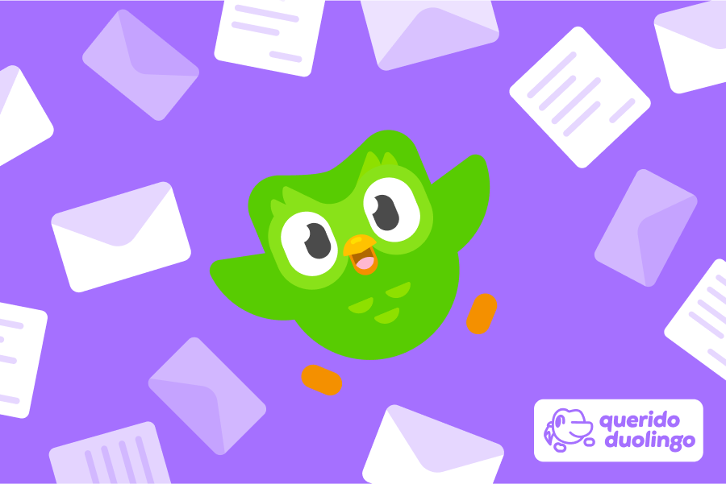

Meus projetos
Instagram: Uma plataforma não convencional
Este projeto é uma página web geralmente usada para lazer, porém que apresenta conteúdos diversos de forma rápida e eficiente. Publicações como reels ou stories disponiveis a todo momento especialmente dedicado a você.

Decidindo o Futuro: Mudando sua vida com Duolingo
Este projeto é um site interativo baseado em navegador que explora os idiomas na sociedade atual, permitindo que as pessoas interessadas façam escolhas que influenciam o desenrolar de uma narrativa internacional sobre o seu próprio futuro.